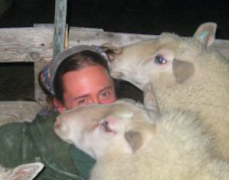

About Me

I am reinventing myself: after many years of physically demanding outdoor work, I have decided to give my lower back a break. I am excited to learn how to code, and I look forward to a new career, which will undoubtedly be challenging in other ways.
I am a great big nerd-- I enjoy reading mainly Sci-Fi and Fantasy, and I have an embarassingly large collection of geeky books and DVDs. In addition, I really enjoy playing tabletop games, such as Firefly, Terraforming Mars, Pandemic, Battlestar Galactica, Last Night on Earth... the list goes on. I like to keep my hands busy by working on counted cross-stitch projects, and I spend a lot of my free time (and money) landscaping my yard. I have three cats, two dogs, and five chickens, and I used to own a flock of sheep, which I very much enjoyed.
I like to go for walks with my dogs at Pony Pasture and other parks around Richmond. I love the river, and the natural beauty of the park in all seasons. I geek out there, too, seeking out various plants to identify. I use the iNaturalist app to find those I don't know. This often leads to interesting conversations with my customers and coworkers at Sneed's Nursery.